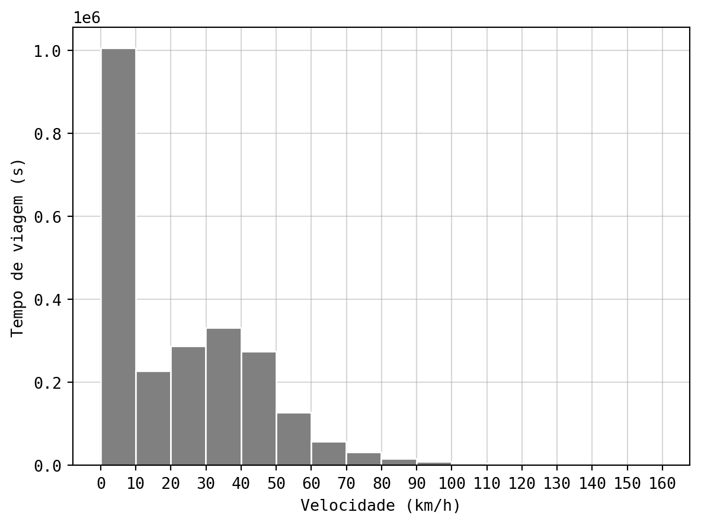
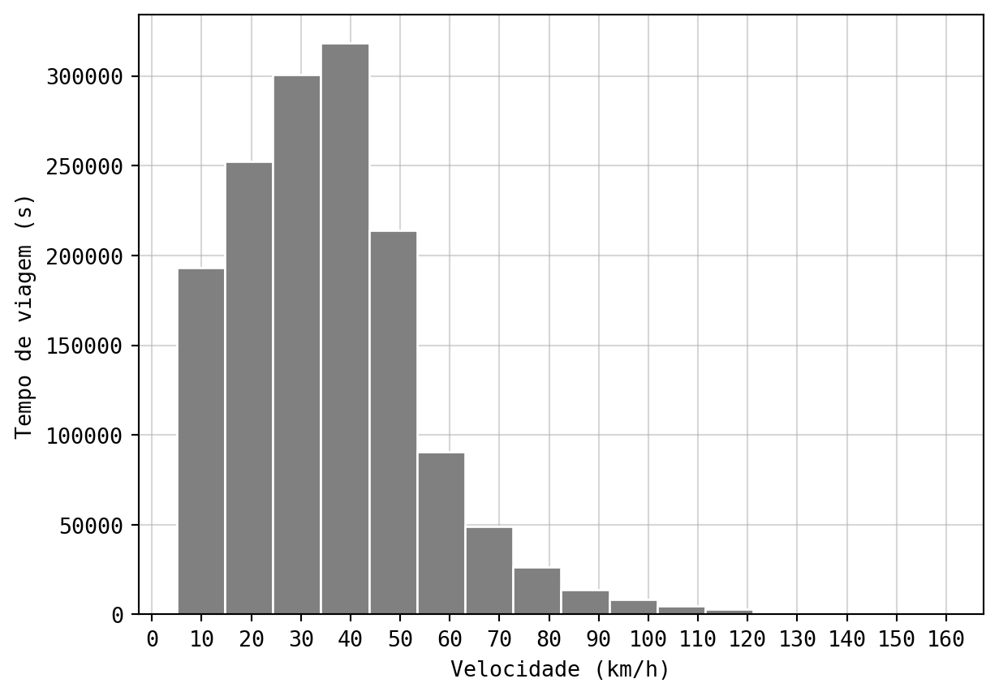
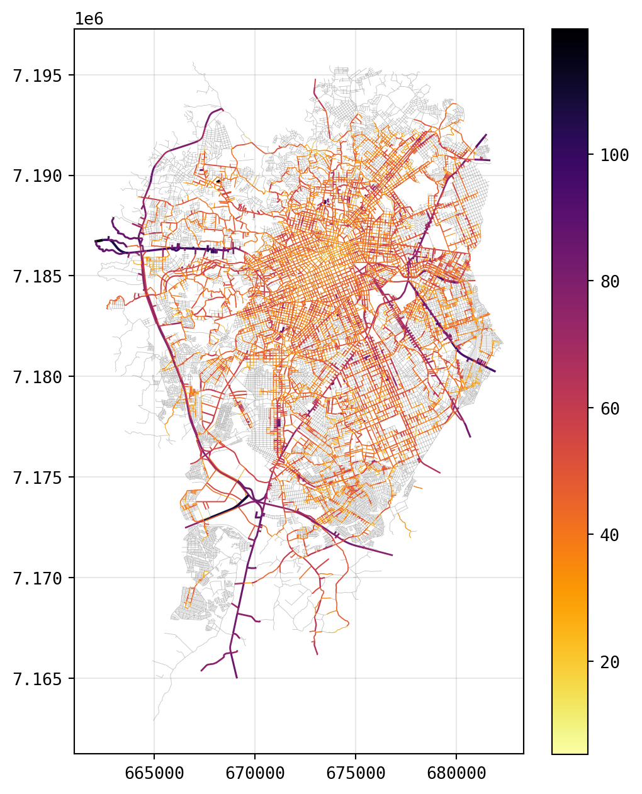

import pandas as pd
import geopandas as gpd
import matplotlib.pyplot as plt
import matplotlib as mpl
import numpy as npVelocidades operacionais em Curitiba-PR
Medindo o V85 nas vias através de dados naturalísticos
Introdução
A velocidade é um fator central na ocorrência de óbitos no trânsito, influenciando diretamente na gravidade de um sinistro considerando a energia de impacto a na chance de ocorrência afetando negativamente o tempo de reação e a visão periférica do condutor.
Uma forma de medir a velocidade praticada em uma via ou trecho de via é a partir do calculo da velocidade de 85º percentil (V85). Com essa medição é possível definir a velocidade operacional de uma via, extraindo o quantil de 85% de uma distribuição de velocidades observadas em um ou mais pontos das vias.
Neste post o objetivo é calcular o V85 para as vias de Curitiba. Os dados de velocidades utilizados aqui foram extraídos da base do Estudo Naturalístico de Direção Brasileiro (NDS-BR)1
Aplicação do cálculo
Primeiro foi necessário carregar as bibliotecas pandas e geopandas para lidar com os dados do NDS-BR; matplotlib e numpy para plotar os resultados e explorar os dados.
Os dados do NDS-BR estão salvos no formato .parquet, do Apache Arrow. Aqui foram selecionadas apenas as colunas necessárias para o cálculo: longitude, latitude e velocidade praticada em quilômetros por hora.
nds_path = "data/ndsbr_full.parquet"
cols = ['long', 'lat', 'spd_kmh']
nds_sample = pd.read_parquet(nds_path, columns=cols)
nds_sample.info()<class 'pandas.core.frame.DataFrame'>
Int64Index: 2382504 entries, 0 to 564053
Data columns (total 3 columns):
# Column Dtype
--- ------ -----
0 long float64
1 lat float64
2 spd_kmh float64
dtypes: float64(3)
memory usage: 72.7 MBDistribuição da velocidade
Antes de atribuir os dados de velocidade às vias de Curitiba, foi elaborado um histograma para analisar a distribuição dos dados (Figura 1). Observa-se que grande parte da amostra possui velocidade entre 0 e 10 km/h. Isso pode ser reflexo da característica do tráfego urbano, em que os condutores passam boa parte de suas viagens parados ou em velocidade quase zerada.
mpl.rcParams['font.family'] = 'monospace'
fig, ax = plt.subplots()
ax.hist(nds_sample['spd_kmh'], bins=16, edgecolor='white', color='grey')
ax.set(
xticks=np.arange(0, 170, 10),
xlabel='Velocidade (km/h)',
ylabel='Tempo de viagem (s)'
)
ax.set_axisbelow(True)
plt.grid(alpha=0.5)
plt.show()

As velocidades iguais ou próximas a zero foram removidas da amostra para garantir que e o V85 represente as velocidades de fluxo não-congestionado nas vias. Assim, foram filtradas as velocidades acima de 5 km/h, resultando na distribuição representada na Figura 2.
nds_valid_speed = nds_sample[nds_sample['spd_kmh'] > 5]
fig, ax = plt.subplots()
ax.hist(nds_valid_speed['spd_kmh'], bins=16, edgecolor='white', color = 'grey')
ax.set(
xticks=np.arange(0, 170, 10),
xlabel='Velocidade (km/h)',
ylabel='Tempo de viagem (s)'
)
ax.set_axisbelow(True)
plt.grid(alpha=0.5)
plt.show()

Cálculo de velocidade nas vias
Outro conjunto de dados necessários inclui os eixos de vias de Curitiba, disponibilizado pelo Instituto de Pesquisa e Planejamento Urbano de Curitiba. Com auxílio do gpd.read_file() foi possível importar o arquivo espacial diretamente para o projeto.
url_vias = 'https://ippuc.org.br/geodownloads/SHAPES_SIRGAS/EIXO_RUA_SIRGAS.zip'
vias_cols = ['CHAVE', 'HIERARQUIA']
vias = gpd.read_file(url_vias, encoding='Latin1', columns=vias_cols)Em seguida os dados do NDS-BR foram transformados para objetos espaciais, utilizando as coordenadas do dataframe como referência. Para associar os dados do NDS-BR aos dados das vias, utilizou-se o método sjoin_nearest() do geopandas. Com o método foi possível verificar qual trecho de via (identificado por uma chave única) é o mais próximo ao ponto do NDS-BR, em um limite de até 20 metros.
Os dados de velocidade foram agrupados pela chave da via e com o quantile(0.85) foi calculada a velocidade de 85º percentil para cada trecho. Por fim, foi realizado um merge() para unir os dados de V85 ao shape das vias.
nds_points = gpd.GeoDataFrame(
nds_valid_speed,
geometry=gpd.points_from_xy(
nds_valid_speed['long'],
nds_valid_speed['lat']
),
crs='epsg:4674'
)
nds_points = nds_points.to_crs('31982')
nds_nearest = gpd.sjoin_nearest(
nds_points,
vias,
how='left',
max_distance=20
)
v85_spd = nds_nearest.groupby('CHAVE')['spd_kmh'].quantile(0.85)
v85_spd = v85_spd.reset_index()
vias_v85 = pd.merge(vias, v85_spd, how='left', on='CHAVE')
vias_v85 = vias_v85.dropna(subset=['spd_kmh'])Resultados
A Figura 3 apresenta o V85 para as vias de Curitiba-PR. Devido à abrangência da amostra do NDS-BR, não foi possível calcular esse valor para todas as vias da cidade.
fig, ax = plt.subplots(figsize=(6,10))
vias.plot(ax=ax, linewidth=0.3, color='grey', alpha=0.5)
vias_v85.plot(
ax=ax,
linewidth=vias_v85['spd_kmh'] / 75,
column='spd_kmh',
legend=True,
cmap='inferno_r',
legend_kwds={'shrink': 0.78}
)
ax.set_axisbelow(True)
plt.grid(alpha=0.3)
plt.show()

Conclusão
Com a base de dados do projeto de pesquisa Estudo Naturalístico de Direção Brasileiro (NDS-BR) foi possível identificar o V85 de trechos de vias em Curitiba. Tal análise pode servir de subsídio para identificar locais de risco à mobilidade segura, considerando as consequências negativas de velocidade inseguras.